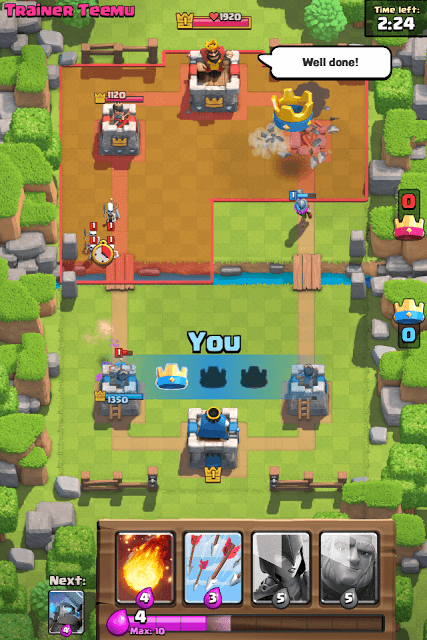

Summary
- The player wins a battle by obtaining more Crowns than the enemy. This is done by destroying the opponent's Crown Towers.
- If the player destroys the opponent's King's Tower, they get 3 Crowns, as the other two Crown Towers will be automatically destroyed as well, resulting in an automatic win.
- The battle ends when:
- One player gets three Crowns. This can be done instantly by destroying the opponent's King's Tower.
- One player has more Crowns than their opponent at the end of the normal three minute period.
- A Crown Tower is destroyed in Overtime (with certain exceptions below).
- The time limit (Battle and Overtime) runs out, and none of the above has occurred. This results in a tiebreaker.
- If both players' towers have identical health, the tiebreaker would be skipped and the match would be counted as a draw. In this condition, neither side wins or loses trophies.
- Once a single tower is destroyed, the game ends with the player who has the most Crowns as the winner.
- Winning multiplayer battles earns the player Trophies, which allows the player to unlock new Arenas and reach higher Leagues.
- New Arenas unlock new Cards and have increasing Chest and Trophy Road Rewards, Victory Gold, and donation & request limits.
- In Victory Challenges, a win will count as progress towards completing the challenge. By achieving wins, players increase the rewards that they earn at the end of the challenge.
- In Global Tournaments and Special Event Challenges, winning a certain number of times can also allow players to obtain one-time rewards.
- If the player has over 4000 trophies at the end of a season (after 28 or 35 days), his/her trophies are reset to half of the trophies above 4000 he/she has, and the player receives new, slightly shuffled Trophy Road
rewards up to their trophy count after the seasonal reset.
Battle

- Players square off against live competition on tiny maps dotted by six buildings; three for each player: two Princess Towers and one King's Tower.
- The objective of the battle is for the player to destroy the other player’s Crown Towers (the big towers with Crowns on them) while protecting their own.
- A player may do this by deploying troops, buildings and spells from a deck of Cards (drawn from a Battle Deck that they've created) anywhere within an allowable area on the field - their territory.
Their territory is the non-red space on the map. More cards are collected by unlocking Chests won in battle or bought in the Shop, which in turn will unlock new cards that the player can add to their Battle Deck and/or level up the cards
they already have.
- Each card requires a certain amount of Elixir to deploy, but the player's Elixir regenerates, so it is only ever moments away from deploying the next troop or spell.
- In the event of taking down a Princess Tower, territory on the opponent's side becomes available for the player to deploy their Cards on. However, the opponent can still play cards in captured areas.
- While battling, the player can communicate through Emotes, small messages that can be accessed by the speech bubble icon next to the deck. These include text messages like "Thanks!" or "Wow!", and emoji-like pictures
such as a raging or laughing king face. Next to the Emotes, there is also a button to mute them. Muting emotes will prevent the player from seeing any Emotes that their opponent or spectators send, but they will also not be able to send any
Emotes back unless the player unmutes them.
- Using Elixir wisely is key to success. When one player has more Elixir than the other, this is called an "Elixir advantage". Having this advantage will give the player more flexibility when attacking or defending.
However, this advantage can shift very quickly if the advantaged player overcommits and allows the disadvantaged player to defend for a good Elixir trade.
Battle Deck
- The battle deck is the rotation of Cards the player has in battle.
- To change these, the player must tap the Card they wish to add into their battle deck and tap, 'Use', before tapping the card that the player would like removed from their battle deck. After tapping 'Use', they can
also
rearrange the cards in the deck by dragging them around like apps on a home screen. This can be used to arrange cards by rarity or cost if one wishes so.
- Under the cards in the deck, it will display the average Elixir cost of all the cards. Occasionally, this can come in handy when deciding if a deck is suitable. For example, a deck with an average of 3.5 Elixir that is
semi-powerful will allow for the deployment of cards more often to counter enemy offences and proceed with an offensive strategy, as compared to a deck with an average cost of 4.7 Elixir. However, the 3.5 deck may be less powerful than the
4.7 deck. A deck with an average cost of below 3.5 elixir is a very versatile deck—the player will need more planning.
- The battle deck consists of 8 cards, so choose only the ones that will be used, otherwise the redundant card will waste a card slot. Be sure to choose cards that can work together and will cover each other's
weaknesses, like including powerful single-target units like the Prince, area damage cards like the Bomber, and air-attacking troops like the Musketeer.
- In battle, 4 of the 8 cards in the player's Battle Deck will be available to play in most cases. The first 4 cards will be randomly selected at the start of the battle. In addition to the 4 cards that are readily
available to play, there is a fifth card in the "Next" slot. Once the player has played a card, the card in the "Next" slot will replace the card that was just played. In turn, another card will take the place in the "Next" slot. The player
should consider not only the 4 cards in their hand but also the 5th card in the "Next" slot when planning an attack.
- If multiple cards are played in quick succession, new cards won't immediately fill the hand. When a new card enters the "Next" slot, it will have a 2-second cool down before it can enter the hand (this cooldown is
reduced to 1 second when Elixir production is doubled).
- Once a card is played, it will not reappear until four cards from the player's Battle Deck have been drawn. In practice, this means that the player will redraw each card after playing exactly any three other cards
after it. Some decks carry many low-cost cards in order to "cycle" to others more quickly, giving them more control over the tempo of a match when used correctly.
- The player can save up to three battle decks using the numbered buttons in the top right corner of the battle deck interface, and up to five if they are Level 8 or above. The selected deck is the one that will be taken
into battle, so check it out before starting a match.
Combat and Damage

- Troops will automatically engage the nearest enemy of their target category if any such enemies are in its aggro range. The aggro range varies by troop and is not revealed in the troop's official stats. Once engaged,
the troop will automatically follow and attack that target as long as possible. If no target is found, they will advance towards the nearest enemy Crown Tower.
- Buildings function just like troops do, but they are stationary and have a lifetime. This means they will gradually lose health after their deploy time is finished, even when not being attacked.
- If a card does Area Damage, it can affect multiple targets at once. "Point" damage (known simply as "Damage" in the card's info screen) is dealt to a single target.
- Any negative effect the player deals (damage, slowing down, immobilisation, pushback, dragging in) will not affect their own troops or buildings and will affect both opponents in 2v2 mode. Because of this, firing
ranged weapons, bombs, or spells into a melee fight can be a very powerful and effective strategy. Similarly, any positive effect the player deals (enraging, cloning, healing) will not affect the opponent's troops or
buildings and will
affect their teammate's troops or buildings as well.
- It is entirely possible that two opposing troops defeat each other simultaneously. This usually happens when two of the same troop, both with the same level, encounter each other.
- Some spells deal damage when they are played. These will do 30% damage to Crown Towers. The Miner also deals reduced damage to Crown Towers and is the only troop that does so.
- When playing a spell, the player must aim it correctly. Most spells have a cast time before they hit, so hitting moving targets can get tricky.
- Crown Towers will attack enemies; the area they cover is different depending on where they are in the Arena. This gives the defender an additional edge in the fighting.
- The Princess Towers have ranges that extend up to a point just before the river in the middle of the Arena. They are active from the start of the match until they are destroyed.
- The player's King Tower will also attack enemies, but only after it is damaged, or a Princess Tower is destroyed. It takes several seconds for the King to pull out his cannon and start shooting. Despite having a
cannon, it has shorter range than the Princess Towers, but more health.
Winning
- In order to win, the player must destroy more Crown Towers than their opponent.
- If the opponent's King Tower is destroyed, the player wins automatically.
- It is entirely possible, but very rare, for the player and the opponent to destroy each other's King's Tower at exactly the same time, resulting in a 3-Crown draw.
- Usually, the player must destroy at least 1 of the Princess Towers in order to proceed to damaging the King Tower.
- This doesn't happen if two buildings are placed in front of the King's Tower, as a building targeting troop such as a Balloon will target the King's Tower after destroying these two buildings. This puts the
opponent at a disadvantage as the death damage of a Balloon or a hit landed by a Hog Rider can activate the King's Cannon, once again giving a significant advantage.
- The player can also directly target the King's Tower with the Rocket (or any other spell that does damage, or the Miner), though this usually won't destroy it. The spells do reduced damage to Crown Towers.
- The game will continue for 3 minutes. When the timer reaches 0, then the player who has destroyed more Crown Towers wins. Under normal circumstances, Elixir generation is doubled after the first two minutes.

- If both players have destroyed an equal number of Crown Towers at the 3-minute mark, a two-minute overtime with sudden death starts, with the last minute using triple elixir rate. In overtime, the first player to
destroy any tower immediately wins.
- It sometimes (although extremely rarely) happens that both players destroy a Princess Tower at exactly the same moment in overtime. In this case, the overtime continues.
- If the overtime also runs out, the game will end with a tiebreaker. In the tiebreaker, all towers rapidly lose health until one is destroyed, meaning that the player owning the Crown Tower with the least amount of
health loses the game.
- If both players' towers have identical health when overtime ends, the tiebreaker is skipped and the match is counted as a draw, except in Clan Wars Duels. Neither player will gain or lose any of their Trophies, nor
will they receive any Chests or Gold for the game. In Clan Wars Duels, a coin flip will randomly decide the winner to break this type of tie.
- After a multiplayer battle, the Crowns earned go towards the player's Crown Chest, if they have one available, which needs ten Crowns to be opened. The contents of the Crown Chest depend on the arena in which it is
opened, regardless of where the 10th Crown was earned.
- The winner of a multiplayer battle will receive Trophies, Gold, and a Silver/Gold/Giant/Magical/Mega Lightning/Epic/Legendary Chest. If the player does not have a free Chest slot, they will not receive a Chest. They
can still receive Gold, however. If the player has already won 20 times throughout the course of the day, they will not receive Gold for subsequent wins until the next day.
- In a Tournament, the winner will receive Gold, but will not receive a Chest.
- In a Victory Challenge, the winner does not receive anything directly, however their win will count as progress towards completing the challenge, as well as increase their rewards at the end of the challenge. If the
win is the final win needed to complete a challenge, the Challenge Chest will immediately be available for opening.
- In Party Mode, the winners do not receive any Trophies, but they will still receive a Chest and Gold if applicable.
Trivia
- A player can use Emotes up to 100 times per game.
- In the tutorial, it is possible for the player to use a deck with less than 8 cards if they do not have enough unique cards unlocked. However, an 8-card deck is required to play multiplayer.
- It is possible to drag more than 1 card onto the field at once, by using more than one finger. This means that, if the player had the required Elixir, they could play 4 cards at once, although this is somewhat awkward to do, especially on smaller devices.
- While battling, pressing and holding a card will show some statistics about the card, such as the damage and (shield) health of a troop and the damage and Crown Tower damage of a spell.
- The theme of Overtime is a slowed down remix of the Clash of Clans battle theme.